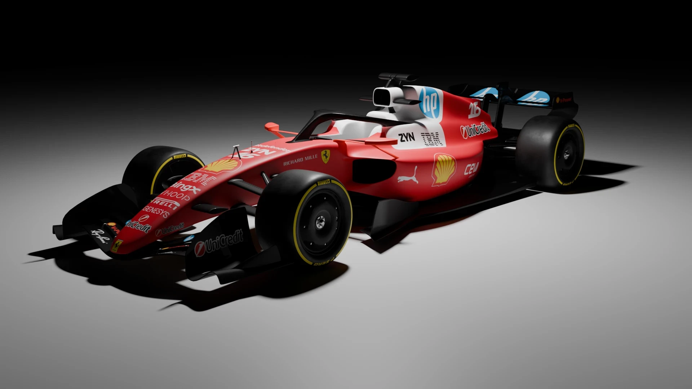
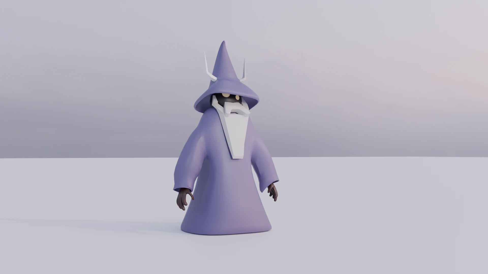
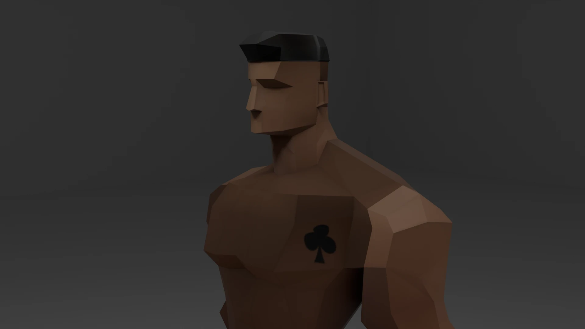
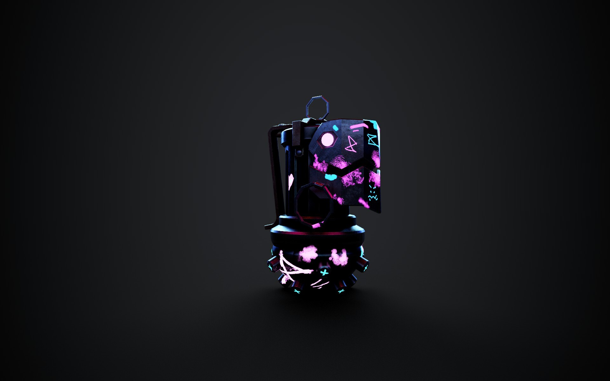
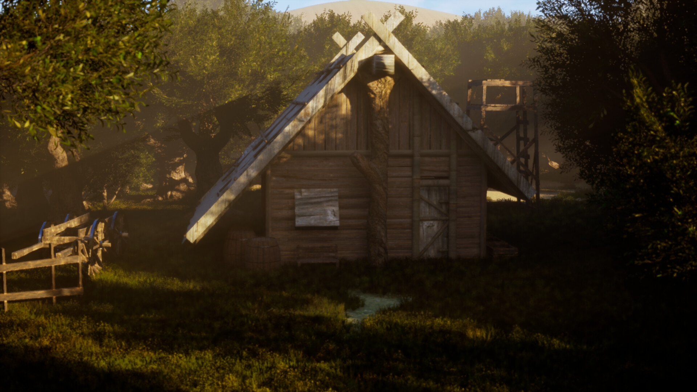
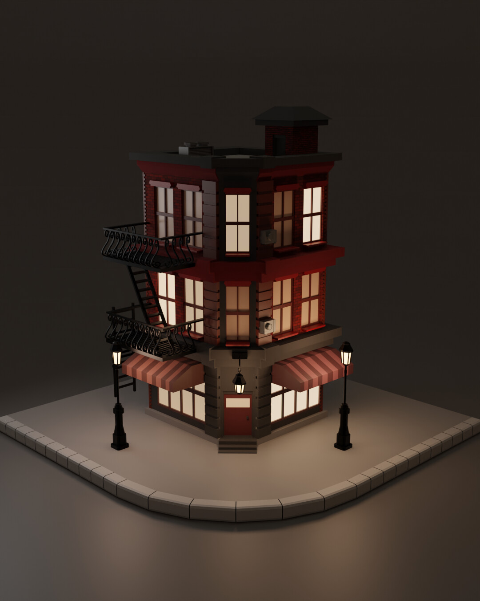

Hard-Surface
Scuderia Ferrari F1
Aerodinamik topoloji, stüdyo renderı ve detaylı livery tasarımı.
Blender
ArtStation →

Stylized
Stylized Büyücü Karakter
Oyun motorlarına hazır minimal form, temiz topoloji ve karakter modelleme.
Blender
ArtStation →

Low-Poly
Game-Ready
Low-Poly Karakter Modelleme
Oyun içi performans için optimize edilmiş düşük poligonlu karakter tasarımı
Blender
ArtStation →

Stylized Prop
Texturing
Arcane Jinx Bomb
Arcane dizisi ve League of Legends oyunundan esinlenerek yaptığım Jinx grenade modelleme ve texture çalışması.
Blender
ArtStation →

Environment Art
Lighting
Orta Çağ Kulübesi / Medieval House
Medieval tarzı bir kulübe ve çevresini Blender ile modelleyip Unreal Engine 5'te renderladım. Işıklandırma ve materyal çalışmalarıyla sahneyi tamamladım.
Blender
ArtStation →

Diorama
Night Lighting
Stylized Bina / Low Poly Building
Modüler mimari modelleme ve gece sahne ışıklandırması ile oluşturulmuş bir low-poly diorama çalışması.
Blender
ArtStation →